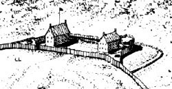
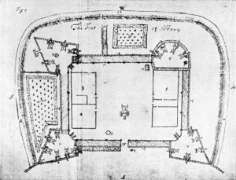

By the time of the English takeover, old Fort Orange had been abandoned. A decade later, it was a shell of its former self. Built by the lowland Dutch as a trading post, its riverside location made it susceptible to springtime flooding and entirely unsuitable for its new purposes under the English.
Initially, the Duke of York sought to maintain a detachment of soldiers in Albany to uphold his rights and generally keep the peace. They may have manned a guardhouse located at the intersection of today's State and Pearl Streets. At this point, we have recovered only anecdotal information about these early English soldiers.
After 1676, the Duke's government took a decidedly more determined approach to governing the province of New York. In Dutch-speaking Albany, that determination took the form of a new fort built above the town - near the top of the main street leading from the river and connecting with the wilderness road that ran to Schenectady. Not a trading post, the new Albany fort would protect the settlers of the region while reminding them that now they were subjects of an English overlord. By the 1680s, the fort had two small buildings and was enclosed by a wooden stockade.
When New York became a royal colony in 1684, the British colonial (royal) government took charge of the fort. Beginning during the 1690s, provincial records begin to document an increase in resources applied to improving the fort and provisioning its garrison.
In 1692, the Reverend John Miller was sent to America to serve English-speaking populations in New York, at Albany, and on the frontier - where he was empowered to minister to the Indians. He also was the fort's most communicative historian. His published report included a map of Albany and of the fort and a description of conditions there. A few years later, the military engineer Wolfgang Roemer drafted another map of the community that showed natural features, marked iconographic elements, and included more detailed depictions of the fort.
After 1713, the frontier line moved west from Albany and north almost into the Champlain Valley. In the years that followed, provincial resources were more likely to be allocated to new "British" outposts at Oswego and along the northern frontier. Also, after 1720, references to the Albany fort and its garrison become less frequent. During the three decades of peace, the garrison at Albany seems to have declined as only a handful of British emigres became part of the Albany community - a marked contrast to the period 1680-1710 when dozens of soldiers married and settled in Albany.
The fort at Albany was re-built during this time as part of a general province-wide upgrade of fortifications. Assembly allocations supported construction of stone walls, more substantial internal buildings, and improved emplacements around the stockade perimeter as well. However, the actual extent of the fort's development is unclear as our understanding of it is guided chiefly by cartographic proposals and subsequent artwork based on those plans. The watercolor by James Eights shown on the left represents his mid-nineteenth century visualization of the fort taken directly from a map made a hundred years earlier. The fort reached its high point of grandeur during the Seven Year's War when the British army was encamped in Albany and its environs. During that occupation, the British further fortified the Albany structure and added external barracks, magazines, storehouses, and a hospital.
With the end of the "French and Indian Wars" and the widthdrawl of the British troops, the Albany fort was without its intended occupants. In 1765, the abandoned fort, hospital, barracks, and other structures were purchased by the Albany corporation. No longer maintained by the provincial government, the fort fell into rapid disrepair. A map of Albany dated 1770 shows the fort in an outlined form that testifies to its dilapitated condition. During the 1760s, local people had salvaged stone, wood, and metal parts from the fort - despite the admonitions of the common council against such actions.
By the time hostilities broke out in 1775, few Americans had illusions about the fort's utility. Nevertheless, it was used as a jail for Tories and for storage of non critical supplies. With the end of the war in 1783, the fort - now in ruins, became a definite obstacle to transportation and to development as the city began to expand north - up the hill. The fort was not shown on the municipal maps produced during the 1790s.
A symbol of British rule - more so for posterity than for the people of colonial Albany who appeared unintimidated and viewed it as an opportunity for profits, the fort at Albany has been part of the traditional iconography of the colonial city.
Captain John Manning commanded the initial garrison. We have compiled some information on officers and men stationed there prior to the 1690s. Admittedly, our work has focused on the soldiers who became city residents. At this point, no comprehensive records for the fort or its garrison have been recovered.
Detail showing the fort from an overview diagram of Albany in 1686 drawn by L. F. Tantillo. This visualization is based on the drawings of the fort accompanying the Miller and Roemer maps. Overview diagream in the collection of Stefan Bielinski.
This diagram of the fort was printed in New York Considered
and Improved, 1695 by John Miller
("published from the original MS. in the British Museum"). The manuscript
was edited by Victor Hugo Paltsits, and published by The Burrows Brothers
Company of Cleveland in 1903. With its descriptive text, analyses, and
annotated maps and diagrams, that work represents a major historical
and ethnographic resource for the history of New York during the 1690s.
British army maps: The maps made for the British army during
the 1750s and 1760s
were made by army engineers to show proposed improvements
to the fortifications at Albany. Stockadoes: A descriptive used most frequently in the City Records to describe the individual logs of the stockade that encircled the colonial city. They were set vertically and seem to have been of variable length and diameter - with 12-16 feet in length and a foot in diameter being the concensus specifications. Pine or another available soft wood probably was used for these pallisades as they needed to be replaced periodically. The most comprehensible narrative on the fort is found in Paul R.
Huey, Aspects of Continuity and Change in Colonial Dutch Material
Culture at Fort Orange, 1624-1664 (Ph.D. dissertation, University
of Pennsylvania, 1988). A set of British engineers' maps of colonial
Albany in the so-called "Crown Collection" of maps in the British
Public Records Office have been published as A Set of Plans and
Forts in America Reduced from Actual Survey 1765, edited by
Jean Mary Ann Rocque (London, nd.).
The most comprehensible narrative on the fort is found in Paul R.
Huey, Aspects of Continuity and Change in Colonial Dutch Material
Culture at Fort Orange, 1624-1664 (Ph.D. dissertation, University
of Pennsylvania, 1988). A set of British engineers' maps of colonial
Albany in the so-called "Crown Collection" of maps in the British
Public Records Office have been published as A Set of Plans and
Forts in America Reduced from Actual Survey 1765, edited by
Jean Mary Ann Rocque (London, nd.).
{kind=link}
first posted: 1/30/01; last revised 2/10/12